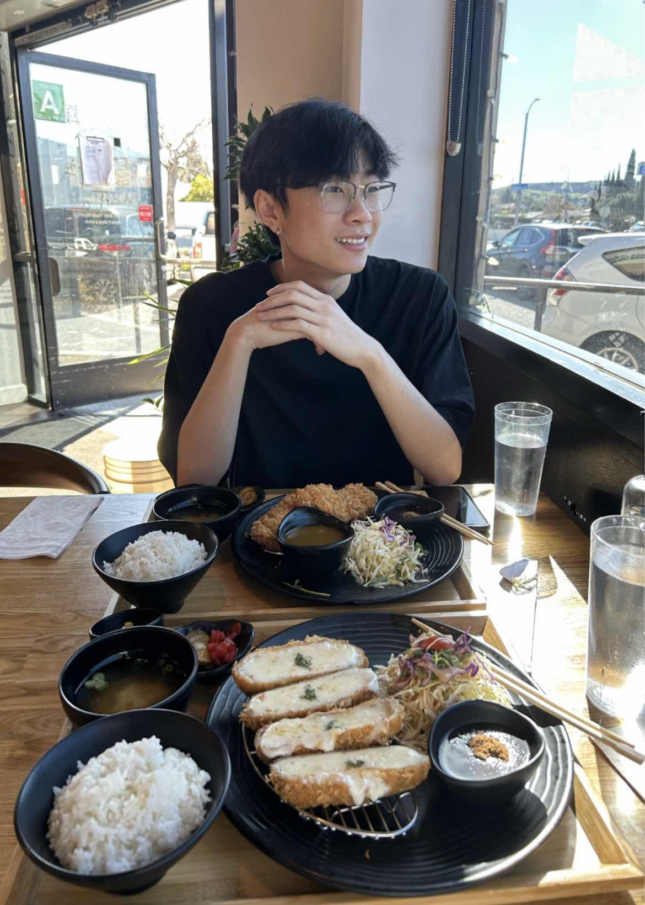

Welcome


Hello! My name is Peter Chinh and I am a 2nd year Computer Science major at California Polytechnic State University, San Luis Obispo.
I am a passionate person with a wide range of interests that keeps
me engaged inside and outside of school.
Here are a few things
I LOVE to do in my free time:
- Watch Anime (Especially One Piece \(≧▽≦)/ )
- Play Videogames (I am addicted to Honkai: Star Rail...)
- Build Keyboards and Computers!
- EAT KATSU!! (refer to photo.)